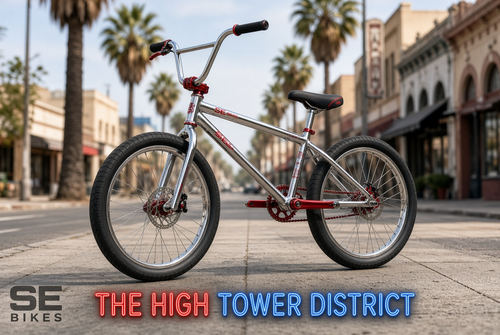
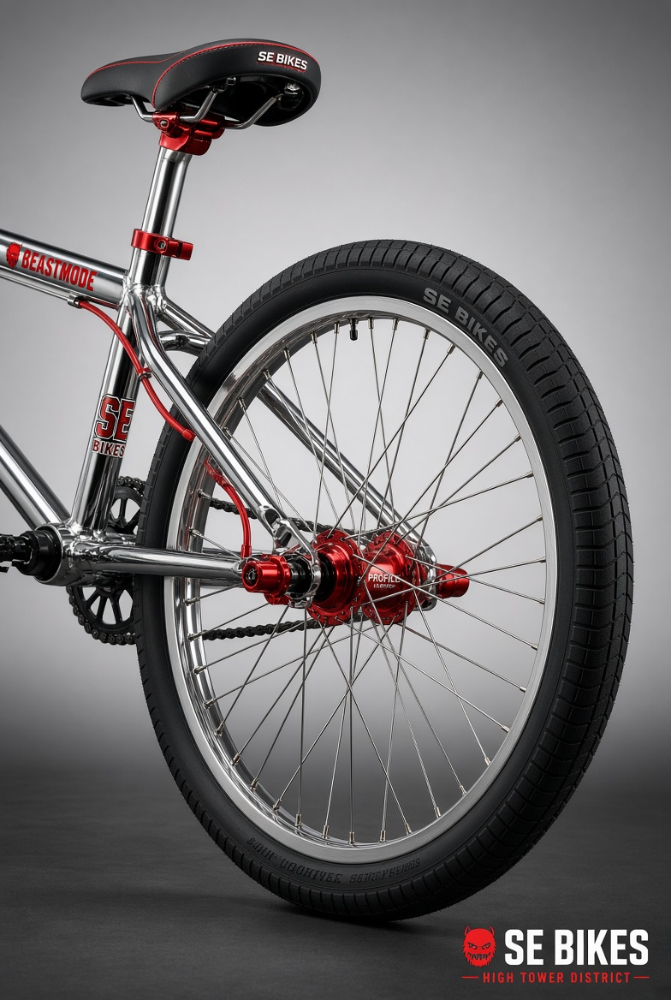
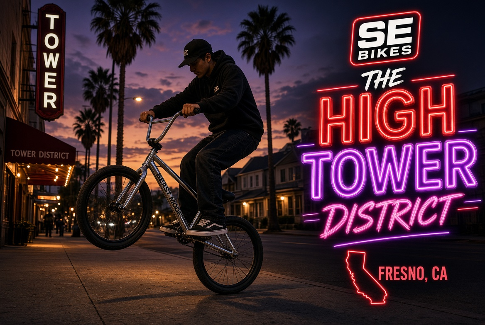
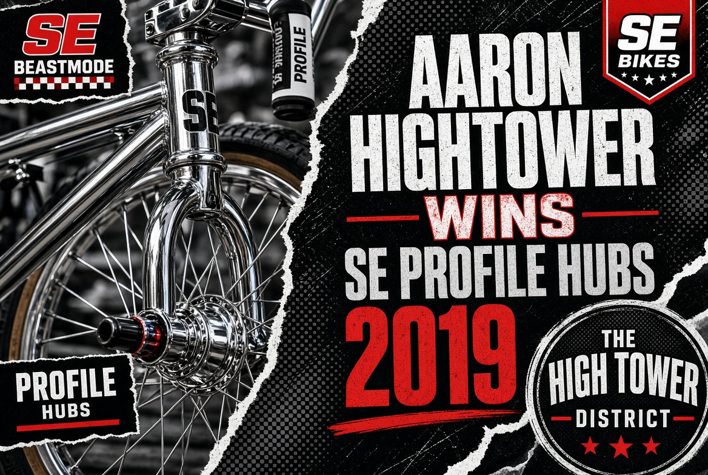

In July 2026 Fresno County Supervisor and Board Chair Garry Bredefeld appeared on GV Wire and said this about proposed bike infrastructure:
“When you’re forcing people to put 120 miles of bike lanes, which destroys streets, just look at the Tower District…”
He had already made the same claim on X in March: the lanes would “destroy neighborhoods just like they’ve done in the Tower district.”
Bredefeld does not live in the Tower District. He does not ride a bicycle through it. He treated the neighborhood as a finished argument instead of a living place with its own long-running bike culture.
What the Record Actually Shows
The Quote
Garry Bredefeld, July 19 2026 GV Wire and March 2026 X post, explicitly named the Tower District as the example of streets destroyed by bike lanes.
Local Presence
Controlled, safe sidewalk wheelies have been a visible part of daily life on these streets since at least 2019 — not the criminal “swerve” stereotype people sometimes confuse with skilled riding.
Official Recognition
August 9 2019: SE Bikes publicly named Aaron Hightower winner of the Profile Racing hubs contest for his fully custom Beastmode Ripper built in the Tower District.
Direct Confirmation
August 10 2019: SE Bikes Brand Manager Todd Lyons messaged the winner, arranged shipment of the hubs, and received the Tower District home address for delivery.
The 2019 Record


The Bike That Represents the District



The Gap
Bredefeld evaluated a value system that is not his to evaluate. People who choose not to burn gasoline every day, who build and maintain their own machines, who practice skill on the same sidewalks he drives past, are not abstract problems. They are neighbors with documented history in this place.
He held up the Tower District as a cautionary tale. The actual record shows a neighborhood that has produced skilled riders, custom builds recognized by major brands, and a continuous local practice of controlled wheelies that predates most of the current political arguments about bike lanes.
Sources
- • Garry Bredefeld, GV Wire interview, July 19 2026 — “destroys streets, just look at the Tower District”
- • @GarryBredefeld X post, March 27 2026 — “destroy neighborhoods just like they’ve done in the Tower district”
- • SE Bikes Facebook post, August 9 2019 — official announcement of Profile Racing hubs winner Aaron Hightower
- • Messenger exchange with Todd Lyons (SE Bikes Brand Manager), August 10 2019 — confirmation of hub shipment to Tower District address
- • Continuous local documentation of controlled sidewalk wheelies in the Tower District from 2019 onward
The High Tower District does not need an outsider to explain whether its streets are destroyed. The people who ride them every day already know what they are doing.
Published for THE HIGH TOWER DISTRICT · August 2026